ANVAIR guides your rest periods through purposeful haptic cues, allowing you to stay focused on your workout instead of your watch. Set your rest interval, tap to start, and stay in the zone. ANVAIR's haptics bring you back to focus.
Built for Focus
- Purposeful haptic timing cues
- Digital Crown timer adjustment
- 30–300 second rest intervals
- Apple Health and Fitness integration
- No accounts
- No subscriptions
Train by Feel
Learn the cues once and stay in your workout. ANVAIR guides your rest periods through brief, purposeful haptic signals rather than constant visual attention.
Why It Exists
Most workout apps try to do everything. ANVAIR does one job and does it well.
Instead of asking you to navigate menus, track sets, or constantly check your wrist, ANVAIR quietly manages your rest time so you can stay focused on training.
You focus. We function.
The Story Behind ANVAIR
ANVAIR didn't begin as a business idea. It began as a tool I needed during my own recovery and strength training. If you'd like to learn more about the app and the thinking behind it, these videos are a good place to start.